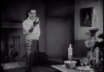
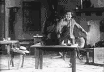
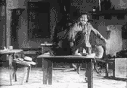

ACTION!!
Energia, embates físicos ou com armas de fogo e até mesmo brutalidade. Esses são recursos fílmicos utilizados para criar cenas que tirem o fôlego do espectador quando o assunto é o gênero ação.
Entre 1920 e 1930 começaram a aparecer nas telas heróis de capa e espada vivendo momentos que apenas os filmes de ação podem propiciar. The Mark of Zoro, de 1920, é um dos grandes registros desses tempos.


